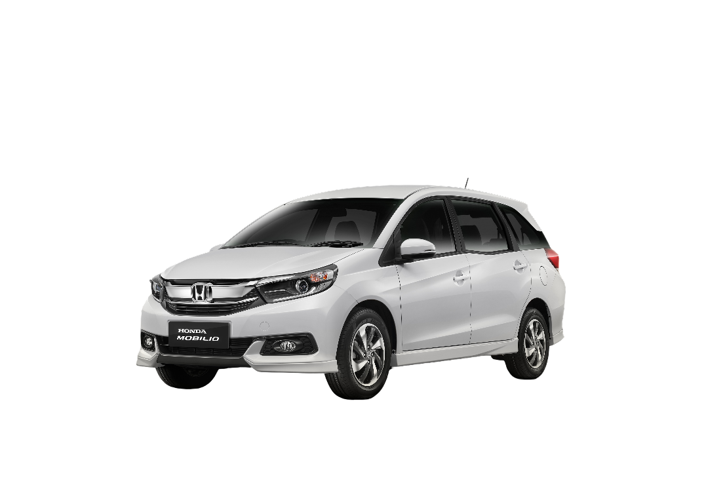

Keamanan Terjamin
Armada dirawat rutin dan diperiksa sebelum setiap perjalanan demi keamanan penumpang.
Kancil Transport mengantar Anda ke tujuan dengan armada bersih, pengemudi profesional, dan harga transparan. Pesan mudah, langsung lewat WhatsApp.

Kami fokus pada hal yang paling penting: perjalanan Anda tiba aman, nyaman, dan tepat waktu.
Armada dirawat rutin dan diperiksa sebelum setiap perjalanan demi keamanan penumpang.
Pengemudi berpengalaman yang hafal rute, menepati jadual penjemputan Anda.
Profesional, sopan, dan siap membantu kebutuhan perjalanan Anda selama perjalanan.
Harga disepakati di awal. Tanpa biaya tersembunyi, tanpa drama.
Kancil Transport merupakan layanan transportasi terpercaya yang siap melayani perjalanan dalam dan luar kota dengan armada yang bersih dan pengemudi profesional.
Kami hadir untuk memberikan kenyamanan dan keamanan perjalanan Anda — dari antar jemput harian, perjalanan jauh, hingga kebutuhan charter untuk keluarga atau bisnis.
Proses pemesanan sederhana, tanpa aplikasi, langsung dari WhatsApp Anda.
Isi form kontak di bawah atau chat langsung ke WhatsApp 0897-9524-004.
Kami kirim info armada, estimasi waktu, dan harga yang transparan.
Pengemudi datang tepat waktu di lokasi penjemputan Anda.
Sampai tujuan dengan aman, lalu selesaikan pembayaran.
“Antar jemput bandara selalu tepat waktu. Pengemudinya ramah, mobilnya bersih. Jadi langganan keluarga.”
“Charter bulanan untuk kantor berjalan lancar. Harganya jelas di awal dan komunikasi via WhatsApp cepat.”
“Perjalanan luar kota terasa aman. Sopir hati-hati, berhenti sesuai kebutuhan. Recommended banget.”
Isi form kontak di halaman ini atau chat langsung ke WhatsApp 0897-9524-004. Sertakan nama, titik jemput, tujuan, dan waktu keberangkatan.
Pembayaran dapat dilakukan setelah perjalanan selesai (bayar di tempat) atau transfer di muka untuk perjalanan jauh dan charter. Detail dikonfirmasi via WhatsApp.
Keduanya! Kami melayani antar jemput dalam kota, perjalanan antar kota, hingga charter harian atau bulanan.
Bisa. Kami siap melayani 24/7 — termasuk antar jemput bandara atau perjalanan malam. Sebaiknya konfirmasi lebih awal agar armada terjadwalkan.
Ya, harga disepakati di awal dan transparan. Jika ada biaya tambahan (misalnya rute memanjang), akan kami infokan sebelum perjalanan dimulai.
Isi form di samping untuk langsung terhubung via WhatsApp, atau hubungi kami di: